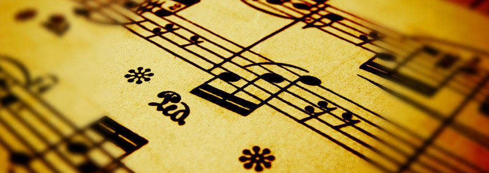
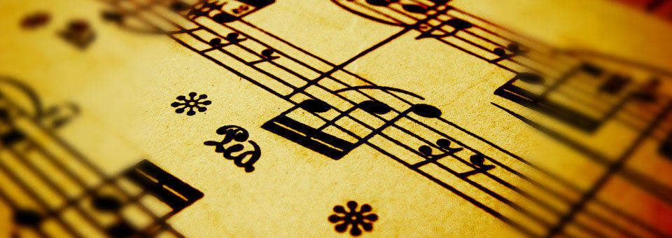
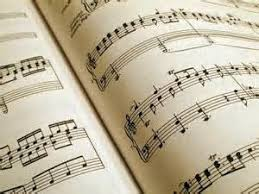
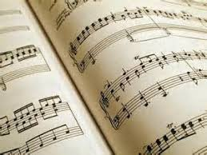

Eén van hobby's is fotograferen.
Fotograferen doe ik al sinds mijn 12e, maar dan echt als hobby.
Ik fotografeer vrijwel altijd in de vakantie. Zelf heb ik een Sony Systeemcamera en gebruik ik ook de Canon 7D van mijn vader
Een andere hobby van mij is paardrijden.
Dit doe ik ook sinds mijn 12e.
Ik heb op verschillende manege's gereden,
maar rijd nu op Stal de Brink in Aalsmeer.
Ook heb ik nu 2 jaar een verzorgpaard op Wennekers staan.
Pensioen stal Wennekers bevind zich ook in Aalsmeer.
Mijn laatste hobby is muziek luisteren.
Zelf luister ik vaak muziek tijdens huiswerk maken of
als ik in de auto zit.
Vaak luister ik dan naar de top 40.
 
